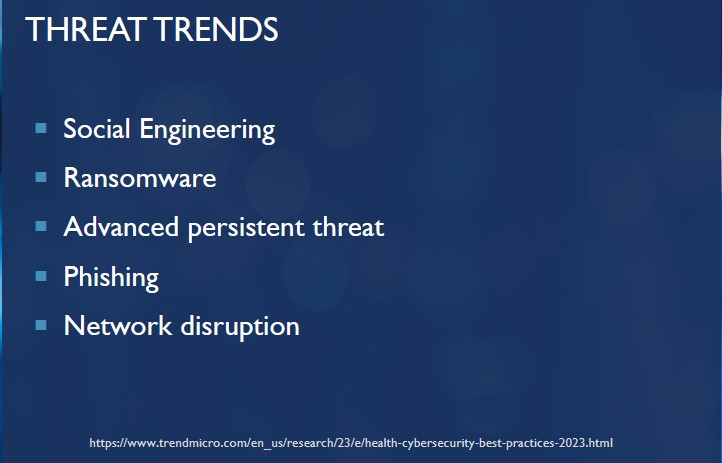

Threat Trends
• USA healthcare organizations were the most targeted by data breaches in 2019-2022.1
• Approximately 1,400 cyberattack attempts per week per organization against healthcare entities worldwide1
• That means IU itself may sustain as many as 200 attempted cyberattacks per day
• These numbers illustrate the need for AI in cybersecurity to respond and block such a deluge of attempts
• Proper information security practices are a challenge with legacy systems having to be brought along into the future for which they may be unprepared
• Phishing is an incredibly common attack vector in the increasingly connected world of healthcare devices.
• Regional hospitals and smaller entities are more likely to be targeted. These groups are low-hanging fruit to attackers due to lack of resources and proactive cybersecurity availability.2
• Specialty clinics and imaging facilities also tend to lack cybersecurity resources while also holding sensitive data
• As an easy & profitable target, the healthcare industry is poised to receive the most aggressive threats in the future
• Third party vendors, cloud data breaches, and IoT such as IV pumps are prominent attack vectors. The Healthcare IoT market worldwide is projected to reach a revenue of US$108.60bn by 2024.3
Intelligence BuyIn
Investing in AI4Cyber technology is a proactive move that offers substantial benefits. MedTech companies can prevent costly breaches, uphold patient confidence, and guarantee regulatory compliance by safeguarding sensitive data and vital healthcare infrastructure.
• Threat Landscape:
The MedTech business has two challenges in this era of increasingly networked medical devices: improving healthcare and protecting against sophisticated cyber threats. Due to the industry's reliance on digital technology, cyberattacks are becoming more frequent and sophisticated, making it a prime target.
• Key Statistic:
Healthcare Cyberattacks Have Increased by 69%, According to a Mid-Year Report. This increase emphasises how urgently strong cybersecurity measures are needed.
• Insight:
According to this particular report, the healthcare sector incurs the highest cost from data breaches, averaging $7.13 million per incident, which is almost 29% higher than the global average across all the industries.
• The Shift Towards AI4Cyber:
By making the switch to AI4Cyber platforms, MedTech organizations may take a proactive approach to cybersecurity. By applying AI's predictive powers, hazards that were previously unknown can be identified, allowing for proactive measures and narrowing the window of opportunity available to attackers.
• Economic View:
Investing in AI4Cyber is a wise financial move in addition to improving security. Through speedier detection and mitigation, the use of AI4Cyber platforms can result in a 40% decrease in the cost of data breaches. (source)
• Case Study:
By examining an AI- and cloud-enhanced homecare medical device, the study demonstrates a thorough approach to data protection that combines technological, legal, and regulatory methods to secure patient data and guarantee GDPR compliance. (source)